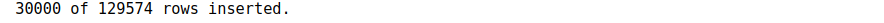
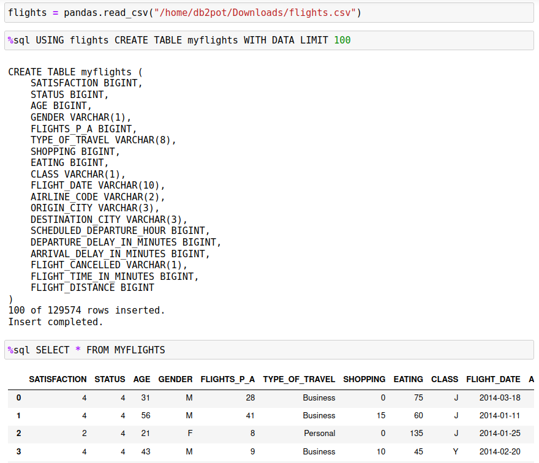
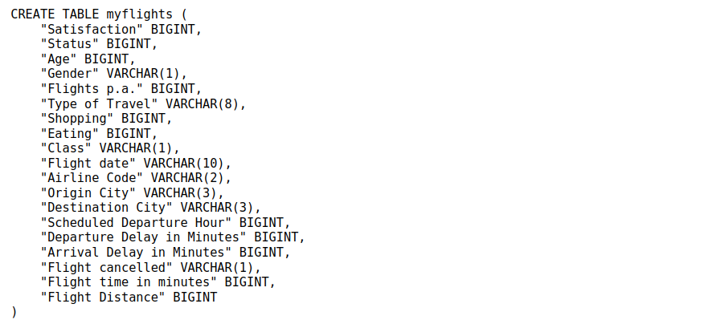
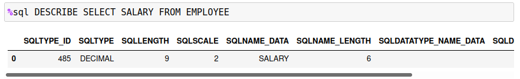

Pandas to Db2
The primary purpose of the %sql command was to allow easy access to Db2 data from within a Jupyter notebook. However, there are situations where you may want to take the contents of a Pandas dataframe and move that into a Db2 table. There are multiple steps required to move the data from a dataframe to Db2 including:
- Determining the columns required, including the data types associated with them
- Creating the Table
- Inserting the contents of the dataframe into the table
In order to simplify the process of saving dataframe information, an extension to the SQL syntax has been added within the Db2 magic commands. The USING keyword in a SQL statement is used to trigger special handling of a dataframe. The syntax of the USING command is:
USING dataframe [CREATE | REPLACE | APPEND | DECLARE] TABLE <name> options
The purpose of the USING command is to create a table based on the dataframe definition, and optionally insert the data into the table. There are additional options which determine how the table is created and whether data is loaded into the table.
The dataframe value refers to the Python variable that contains the dataframe contents. Do not use the SQL variable format :dataframe or Python value substitution {dataframe} in the statement.
Create, Replace, or Append a Table
The USING command has three different modes of operation:
CREATE- Create the table based on the dataframe contentsREPLACE- Recreate the table (delete the old one) based on the dataframe contentsAPPEND- Use the existing table definition and update the contentsDECLARE- Print the table definition only
After each one of these modes you must specify the name of the table. The table can be qualified with a SCHEMA name:
%sql USING df CREATE TABLE db2inst1.flights ...
If no options are found after the mode (CREATE,REPLACE), a table will be created with the dataframe column definitions:

The definition of the table is displayed underneath the command. If you believe that different data types should be used for the columns, then you can copy the command into another cell and recreate the table with the proper settings.
An error message will be displayed if you use the CREATE statement and the table already exists in the system.

In this case you should use the REPLACE option which will recreate the table for you.
The APPEND mode will fail if the table has not been created. The best practice is to CREATE or REPLACE the table first and then use APPEND.

If the table does exist, APPEND will insert the data from the dataframe into the new table.
Options
There are five options that can be specified after the mode:
WITH DATA- Create the table and insert the data from the dataframeLIMIT x- Limit the amount of data loaded toxrowsCOLUMNS ASIS- Keep the column names as found in the dataframe instead of Db2-friendly namesKEEP FLOAT64- Keep all float64 dataframe columns as isKEEP INT64- Keep all int64 dataframe columns as isFORMAT SPEC- See below for column formatting options
With Data
With the CREATE and REPLACE modes, the table will be created, but no data will be inserted in the table. The APPEND mode assumes that you do want the data inserted so it does not require this option. When you specify the WITH DATA option, after creating the table the system will insert the data from the dataframe into the Db2 table.
When data is being loaded into the table, a progress indicator will appear underneath the table definition giving an indication of how many rows have been inserted into the table.

LIMIT x
The WITH DATA option will tell the system to insert the data from the dataframe into the Db2 table. The LIMIT x option will stop the inserts after x number of rows. This may be useful if you only want to store a subset of data into the Db2 table, or if you want to make sure that the data is being properly inserted into the table. You can always test the insert process by using the following steps:

COLUMNS ASIS
When the system attempts to create the Db2 table, it takes the column names in the dataframe and makes them Db2 compatible. This means that special characters and blanks are removed from the name and replaced with underscores. In addition, the names are converted to uppercase so that SQL statements do not have to delimit column names with double quotes ".
The SQL standard allows column names to contain special characters, as long as they are delimited with double quotes. If a column name uses standard characters A-Z,0-9,_, then no quotes are required around the column name. There is also no need to worry about the case of the column names since all names will be folded to uppercase.
The conversion of column names can be seen in the flights.csv data set. The columns in this CSV file are named:

During the conversion process, the columns are renamed:

The most notable change is the conversion of blanks to underscore _ characters. If you do not want this conversion to occur, and keep the column names in their original format, use the COLUMNS ASIS option. This will cause the program to create the table with the exact column names of the dataframe without any changes. The CREATE example below illustrates how the column names are kept the same.

Note that this will make creating SQL queries slightly more challenging! If you want to query the flights per annum field, you will need to make sure you place the column name in quotes and have the correct spelling:
%%sql
SELECT * FROM MYFLIGHTS
WHERE "Flights p.a." > 10
KEEP FLOAT64, INT64
Pandas will often convert data into types that are larger than what is required. A good example of this is when a column with decimal or numeric values gets the data converted to float! The sample EMPLOYEE table illustrates this problem. A DESCRIBE of the EMPLOYEE table shows that the SALARY column is decimal.

When the dataframe is created from the SELECT statement, the data type for the SALARY column is float64.

When a table is created from this dataframe, the default behavior is to create a datatype that is closer to the values in the column. In this case the data is converted to DECFLOAT which is more suited to decimal numbers.

If you do not want float64 or int64 values to be converted to smaller datatypes, you must use the KEEP FLOAT64 and/or KEEP INT64 to keep the original values.
%sql USING employee CREATE TABLE NEW_EMPLOYEE KEEP FLOAT64 KEEP INT64
Format Specification
You can change how the program creates columns by specifying a formatting option. The format options are:
- INTTYPE - SMALLINT, INT, BIGINT
For any integer column, use SMALLINT, INT, or BIGINT
- CHARTYPE - CHAR, VARCHAR, NVARCHAR, VARGRAPHIC
For any character column, use VARCHAR, NVARCHAR, VARGRAPHIC, or CHAR. Note that the value after the type (i.e., the "x" in VARCHAR(x)) is computed by the program.
- CLOBTYPE - CLOB, CLOB(x), VARCHAR(x)
For a CLOBTYPE, you must provide a length when using VARCHAR and optionally for CLOB.
- BLOBTYPE - BLOB, BLOB(x), VARBINARY(x)
For a BLOBTYPE, you must provide a length when using VARBINARY and optionally for BLOB.
- FLOATTYPE - FLOAT, REAL, NUMERIC, DECIMAL(x,y)
For a floating point number you can use any of the options above. For DECIMAL, you must specify the length and scale (x,y).
- PADDING multiplier
The padding multiplier is used with all character columns. The multiplier will pad the character definition by the amount specified after the PADDING keyword. For instance, PADDING 1.5 on CHAR(10) will result in a CHAR(15) definition.